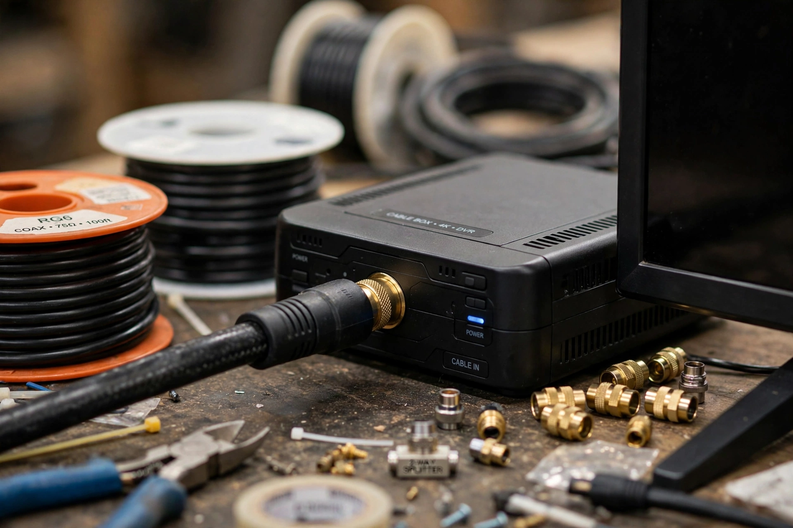

| Cable television | |
|---|---|
 | |
| Delivery | Coaxial cable / hybrid fiber-coaxial (radio-frequency signals) |
| Origins | 1948, United States (community antenna television, CATV) |
| Key standards | NTSC (analog), DOCSIS / QAM (digital) |
| Major providers (U.S.) | Comcast (Xfinity), Charter (Spectrum), Cox |
Cable television is a system of delivering television programming to consumers via radio frequency (RF) signals transmitted through coaxial or fiber-optic cables, in contrast to broadcast television, in which signals are transmitted over the air and received by an antenna, and satellite television. Cable systems also commonly provide broadband internet and telephone service over the same infrastructure.
Cable originated in 1948 in the United States as "community antenna television" (CATV), extending broadcast signals to mountainous or remote communities such as Mahanoy City, Pennsylvania, and Astoria, Oregon, where over-the-air reception was poor. In the 1970s, entrepreneurs such as Charles Dolan and Ted Turner exploited satellite distribution to create national cable networks: HBO began satellite transmission in 1975, and Turner's Atlanta station WTCG (later TBS) became the first "superstation." CNN launched the first 24-hour news channel in 1980.
By the 1990s a typical system offered dozens to hundreds of channels, organized into tiers. Cable networks, funded by both advertising and per-subscriber carriage fees and largely free of broadcast content regulation, became the home of acclaimed original programming, from The Sopranos and The Wire on HBO to basic-cable dramas on AMC and FX.
Traditional cable plants use hybrid fiber-coaxial (HFC) architecture: fiber-optic trunks carry signals to neighborhood nodes, where they are converted to RF over coaxial cable for the last drop to homes. Digital cable uses QAM modulation; cable modems follow the DOCSIS standard. Programming is typically encrypted and decoded by set-top boxes or CableCARD devices.
From the 2010s, streaming services drew subscribers away from cable bundles — a trend known as cord-cutting — while cable operators increasingly emphasized broadband internet as their core business. Pay-TV subscriptions in the United States peaked around 2010–2012 at roughly 100 million households and have since fallen substantially.